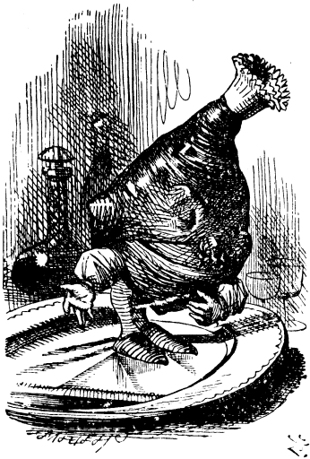

"YOUR Red Majesty shouldn't purr so loud," Alice said, rubbing her eyes, and addressing the kitten respectfully, yet with some severity. "You woke me out of--oh! such a nice dream! And you've been along with me, Kitty--all through the Looking-glass world. Did you know it, dear?"
It is a very inconvenient habit of kittens (Alice had once made the remark) that, whatever you say to them, they always purr. "If they would only purr for "yes,' and mew for "no,' or any rule of that sort," she had said, "so that one could keep up a conversation! But how can you talk with a person if they always say the same thing?"
On this occasion the kitten only purred: and it was impossible to guess whether it meant "yes" or "no."
So Alice hunted among the chessmen on the table till she had found the Red Queen: then she went down on her knees on the hearthrug, and put the Kitten and the Queen to look at each other. "Now, Kitty!" she cried, clapping her hands triumphantly. "You've got to confess that that was what you turned into!"
("But it wouldn't look at it," she said, when she was explaining the thing afterwards to her sister: "it turned away its head, and pretended not to see it: but it looked a little ashamed of itself, so I think it must have been the Red Queen.")

"Sit up a little more stiffly, dear!" Alice cried with a merry laugh. "And curtsey while you're thinking what to--what to purr. It saves time, remember!" And she caught it up in her arms, and gave it one little kiss "just in honour of its having been a Red Queen, you know!"
"Snowdrop, my pet!" she went on, looking over her shoulder at the White Kitten, which was still patiently undergoing its toilet, "when will Dinah have finished with your White Majesty, I wonder? That must be the reason you were so untidy in my dream. -- Dinah! Do you know that you're scrubbing a White Queen? Really, it's most disrespectful you, and I'm quite surprised at you!"
"And what did Dinah turn to, I wonder?" she prattled on, as she settled comfortably down, with one elbow on the rug, and her chin in her hand, to watch the kittens. "Tell me, Dinah, did you turn to Humpty Dumpty? I think you did--however, you'd better not mention it to your friends just yet, for I'm not sure."
"By the way, Kitty, if only you'd been really with me in my dream, there was one thing you would have enjoyed--I had such a quantity of poetry said to me, all about fishes! To-morrow morning you shall have a real treat. All the time you're eating your breakfast, I'll repeat The Walrus and the Carpenter to you; and then you can make believe it's oysters, my dear!"
"Now, Kitty, let's consider who it was that dreamed it all. This is a serious question, my dear, and you should not go on licking your paw like that --as if Dinah hadn't washed you this morning! You see, Kitty, it must have been either me or the Red King. He was part of my dream, of course-- but then I was part of his dream, too! Was it the Red King, Kitty? You were his wife, my dear, so you ought to know--oh, Kitty, do help to settle it! I'm sure your paw can wait!" But the provoking kitten only began on the other paw, and pretended it hadn't heard the question.
Which do you think it was?